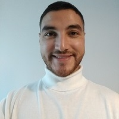
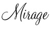
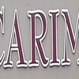
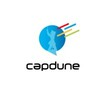
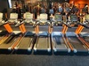
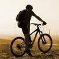
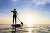
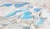
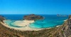

Mes Coordonnées
Je m'appelle Ali Messaoudi
j'habite à Dunkerque
J'ai 32 ans
J'ai le permis B et un véhicule
Vous pouvez me joindre à ali.messaoudi.dk@gmail.com
Mon parcours professionnel
  Mon experience professionnelle
2003 Le stagiaire informatique
En juin 2003, j'effectue une stage d'immersion professionnelle dans l'atelier informatique du Collège
Lors de cette période de trois semaines, j'ai appris le fonctionnement d'un ordinateur, d'un BIOS, d'un logiciel et d'un site web.
J'effectuais surtout du dépannage informatique, je réparais, je sauvegardais les données et je remplaçais des composants déféctueux, il m'arrivais de dépanner mon pc et celui de mes amis
2006-2008 L'ourvier du bâtiment
J'entre au LEP en Georges Guynemer en 2004.
Je termine mon BEP couvreur, puis je déménage à Paris pour travailler dans le bâtiment.
Je reste deux ans à Paris où je m'installe et je travaille comme plombier/couvreur.Cette expérience m'a permis de m'inserer dans le monde du travail et de découvrir la région parisienne.
2009 L'opérateur de tri
Je retourne sur Dunkerque car la crise économique touche de plein fouet le secteur du bâtiment, je travaille comme d'opérateur de tri de déchets ménagers.
2011-2012 Le cuisinier Belge
Je cuisine en Belgique pour changer d'ambiance professionnelle et mieux gagner ma vie, j'effectue deux saisons dont je garde un bon souvenir.
2013 Le conseiller clientèle
Je suis conseiller clientèle à Dunkerque, j'informe, je conseille et je depanne le client en ligne.
Je renseigne les clients sur leur facture, leur consommation data et j'aide à règler les problèmes techniques qu'ils rencontrent.
Je propose aux clients des forfaits et des téléphones adaptées à leur besoins.
2014-2021 Le chauffeur routier
Je passe les permis poids lourd et je me lance dans le transport routier de marchandises, je sillone les routes de la France et du Benelux à bord de mon camion pendant 6 ans en transport de matières dangereuses.
Mes hobbies
Sport
J'aime pratiquer la musculation pour me défouler et garder la forme.
J'aime faire du VTT en sillonnant le littoral et la campagne.
Loisirs
J'aime jouer au jeux vidéo en ligne
Voyage
j'aime voyager et decouvrir des lieux insolites.
 